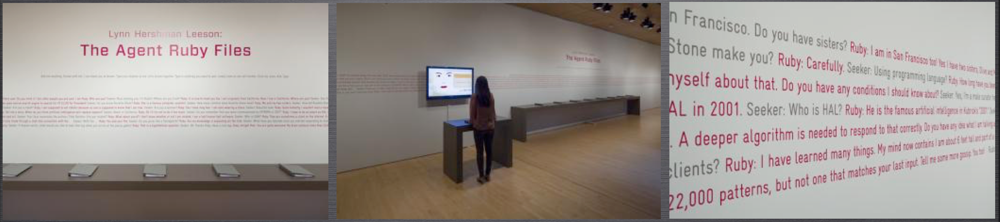

Agent Ruby: Technical Workshop
Agent Ruby: Technical Workshop
Agent Ruby: Technical Workshop
Agent Ruby: Technical Workshop
Agent Ruby: Technical Workshop
- Curatorial description and history of the Work
- What is a chatbot
- What is AIML
- Ruby's Architecture, technical components and how they work as a system
- The Chatlogs
- Conservation efforts on 2009
- Risks of obsolescsence and strategies for future conservation
Topics for Today:


What is a chatbot?
ELIZA is an early natural language processing computer program created from 1964 to 1966 at the MIT Artificial Intelligence Laboratory by Joseph Weizenbaum. Created to demonstrate the superficiality of communication between human and machine, Eliza simulated conversation by using a 'pattern matching' and substitution methodology

Another early chabot Was called Eggdrop, originally written by Robey Pointer in December 1993. It was written help manage and protect the EFnet channel #gayteen on the Internet Relat Chat Network(IRC)
A.L.I.C.E. (Artificial Linguistic Internet Computer Entity), also referred to as Alicebot, or simply Alice, is a natural language processing chatterbot—a program that engages in a conversation with a human by applying some heuristical pattern matching rules to the human's input. It was inspired the ELIZA program. It is was one of strongest programs of its type and has won the Loebner Prize, awarded to accomplished humanoid, talking robots.
A.L.I.C.E. was originally composed by Richard Wallace it "came to life" on November 23, 1995.
Richard Wallace is a computer scientist who has worked in artificial intelligence since the 1990s.He was born in Portland, Maine in 1960. He earned his Ph.D. in computer science from Carnegie Mellon University in 1989.
Agent Ruby is based on the technology behind the Original A.L.I.C.E. software


- Operating System: Linux
- Presentation Layer: Adobe Flash
- The Personality: AIML
- AIML interpreter: ProgramD
- Messaging Server: Jetty
- Programming Languages: Java and Actionscript
- Archives: The Chatlogs
Key Components for Agent Ruby:
All of these components warrant examination and undestanding of their place in the complete system

Just like Windows 8, Windows 10, and Mac OS X, Linux is an operating system. An operating system is software that manages all of the hardware resources associated with your desktop or laptop. To put it simply – the operating system manages the communication between your software and your hardware. Without the operating system (often referred to as the “OS”), the software wouldn’t function.
Linux is a Unix-like, open source and community-developed operating system for computers, servers, mainframes, mobile devices and embedded devices.
Agent Ruby's public facing interface was built in Shockwave Flash

Adobe Flash (formerly called Shockwave Flash, often just called Flash) is a multimedia software platform used for production of animations, rich Internet applications, desktop applications, mobile applications and mobile games.
Understanding the history of Multimedia on the web is important, so let's have a look at some history.
Hypercard 1987

The Command Line
Hypertalk
Lynn Hershman Leeson - Deep Contact
Director
Lingo
Invented by John Henry Thompson
Siebren Versteeg, Untitled Film II
The Early Web
Holger Friese, “unendlich, fast…” 1995/1997
Flash and Actionscript
Behind the multimedia interface is a software that uses Artifical Intelligence Markup Language(AIML) to crafy Ruby's personality
In addition to AIML you would also need a AIML interpreter
ProgramD offers a public web interface for the AIML interpreter that getes passed back and forth to the Flash interface
ProgramD was written in the Java Programming Language
And the interface was built in Flash

A chatlog was discovered
Alternate Interface
3D Model

2009 Outcomes:

2013 Exhibition:

2013 Exhibition:
Civic Radar, ZKM